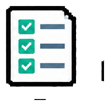

Start with ownership
Name the source of truth, receiving field, rule owner, and intended learner outcome before building a feed or export.
LMS Administration / Connected Systems
A reliable learning path depends on what happens between systems: who a learner is, what they can access, what the course reports, and whether downstream records are usable. I map those handoffs, test the exceptions, and keep a human review point where data is uncertain.
Common Integration Use Cases
I work directly with LMS exports, account matching, migration crosswalks, and validation. Identity feeds, standards, APIs, and BI destinations are useful platform-informed patterns when the system and team support them.
Operational Best Practices
These checks matter more than the connection method itself.
Name the source of truth, receiving field, rule owner, and intended learner outcome before building a feed or export.
Confirm which identifier joins people, accounts, courses, and credentials; never let a fuzzy match silently move a learner.

Verify the admin record and the learner experience, including permissions, assignment, launch, completion, and status.
Preserve unmatched, duplicate, late, and conflicting records in a review queue with an owner and retest step.
Compare samples and totals back to source data before a team acts on a completion or certification report.
Record timing, permissions, versions, change impact, and who responds when a field or rule changes.